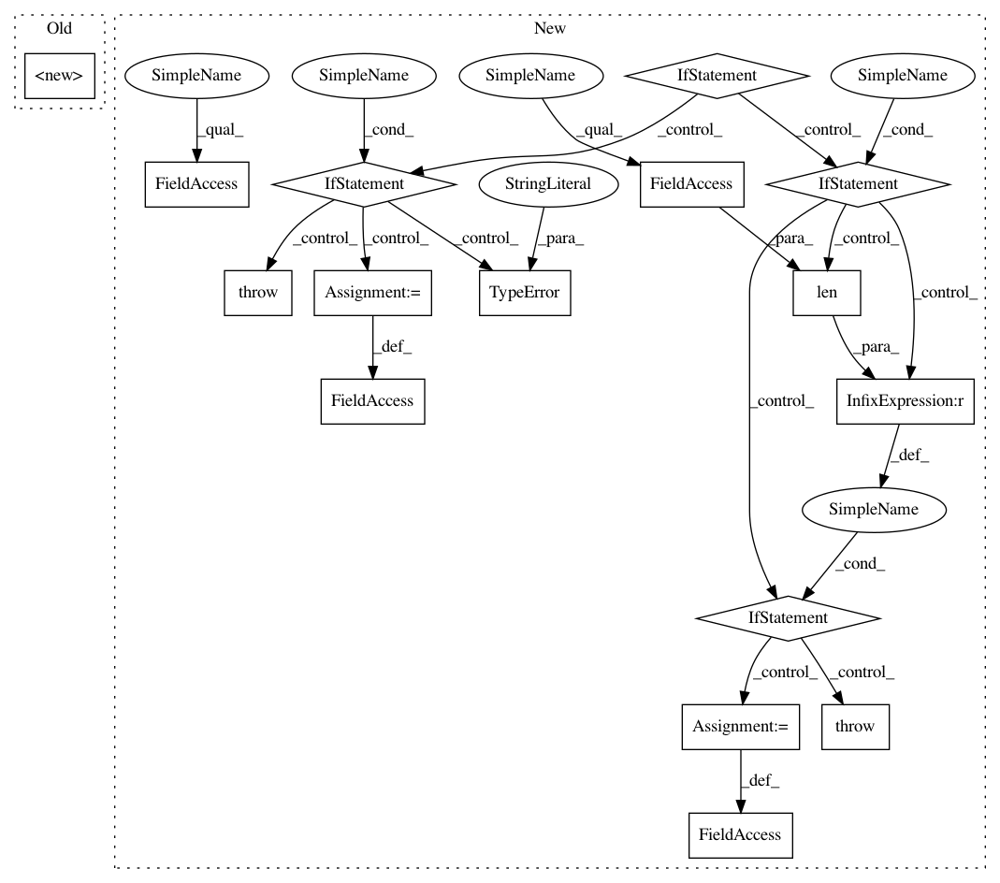

2de1df1704c1c187c72aacc15efcacd7029139dd,stellargraph/utils/saliency_maps/integrated_gradients.py,IntegratedGradients,__init__,#IntegratedGradients#Any#Any#,40
Before Change
def __init__(self, model, generator):
super().__init__(model, generator)
def get_integrated_node_masks(
self,
node_idx,
After Change
// Set sparse flag from the generator
self._is_sparse = generator.use_sparse
if self._is_sparse:
if not isinstance(generator, SparseFullBatchSequence):
raise TypeError(
"The generator supplied has to be an object of SparseFullBatchSequence for sparse adjacency matrix."
)
if len(model.input) != 4:
raise RuntimeError(
"Keras model for sparse adjacency is expected to have four inputs"
)
self._adj = generator.A_values
self._adj_inds = generator.A_indices
else:
if not isinstance(generator, FullBatchSequence):
raise TypeError(
"The generator supplied has to be an object of FullBatchSequence for dense adjacency matrix."
)
if len(model.input) != 3:
raise RuntimeError(
"Keras model for dense adjacency is expected to have three inputs"
)
self._adj = generator.A_dense
// Extract features from generator
self._features = generator.features
self._model = model
def get_integrated_node_masks(
In pattern: SUPERPATTERN
Frequency: 3
Non-data size: 16
Instances
Project Name: stellargraph/stellargraph
Commit Name: 2de1df1704c1c187c72aacc15efcacd7029139dd
Time: 2020-02-16
Author: kieranricardo@hotmail.com
File Name: stellargraph/utils/saliency_maps/integrated_gradients.py
Class Name: IntegratedGradients
Method Name: __init__
Project Name: IBM/adversarial-robustness-toolbox
Commit Name: f5760b43ca0f5fe11fdafe803e9be54fc56d0da6
Time: 2018-11-28
Author: ambrish.rawat@ie.ibm.com
File Name: art/detection/features.py
Class Name: KNNPreds
Method Name: __init__
Project Name: IBM/adversarial-robustness-toolbox
Commit Name: f5760b43ca0f5fe11fdafe803e9be54fc56d0da6
Time: 2018-11-28
Author: ambrish.rawat@ie.ibm.com
File Name: art/detection/features.py
Class Name: MeanClassDist
Method Name: __init__
Project Name: stellargraph/stellargraph
Commit Name: 2de1df1704c1c187c72aacc15efcacd7029139dd
Time: 2020-02-16
Author: kieranricardo@hotmail.com
File Name: stellargraph/utils/saliency_maps/integrated_gradients.py
Class Name: IntegratedGradients
Method Name: __init__